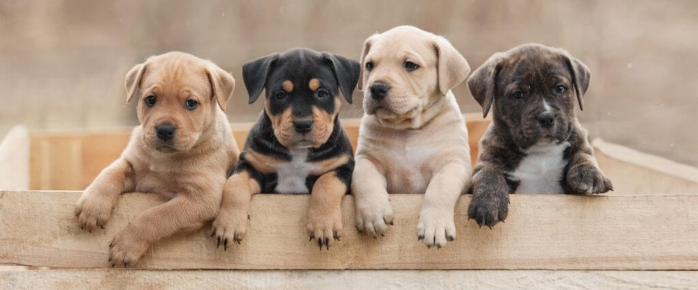
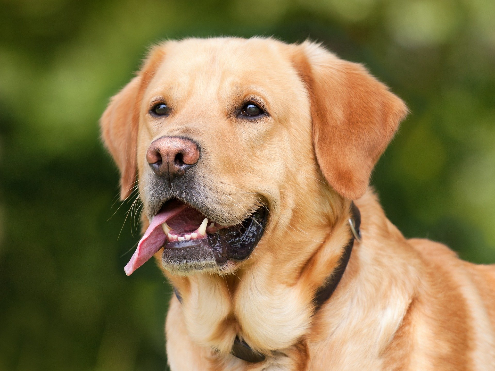

Postoji oko 800 rasa pasa. Neke od najpoznatijih su labrador, zlatni retriver, pit bul, doberman i vučijak.
Psi su karakteristični po time što su veoma lojalni i intaligentni. Mnoge rase se gaje zbog zaštite vlasnika, neke rase su pogodne i za pomoć osobama sa posebnim potrebama.
Klikom na sliku možete pročitati zanimljivosti o psima na sajtu Nacionalne geografije 